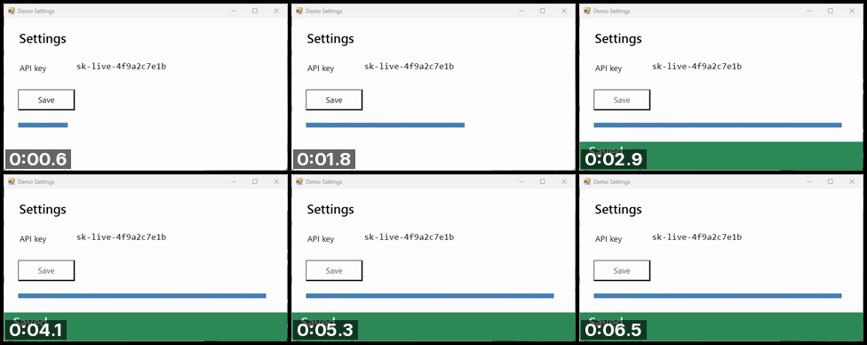

SCREENCAST-MCP / WORKFLOWS / REC 05
Review a long recording cheaply
A model can't watch video, and sampling a long recording at a fixed rate burns tokens on near-identical frames. Get the shape of it from one image, pull full frames only where the screen changed, and find the dead air.
00:00THE PROMPT
What happens in this recording? Don't send me every frame. And how much of it is dead air?
00:05THE CALLS IT MAKES
get_media_info → contact_sheet → sample_frames (scenes) → cut_idle. Paths are shortened; every value is from a real run.
- get_media_info { "input": "rec-….mp4" }Cheap, and tells the agent what it is dealing with.{ "durationSec": 7.07, "width": 602, "height": 352, "fps": 15 }
- contact_sheet { "input": "rec-….mp4", "count": 6, "columns": 3, "tileWidth": 320 }The whole recording in one inline image, each tile stamped with its time.{ "frameTimes": [0.59, 1.77, 2.94, 4.12, 5.3, 6.48], "columns": 3, "rows": 2 }
- sample_frames { "input": "rec-….mp4", "mode": "scenes" }Full-resolution frames only where the screen changed, plus the opening frame.
sceneThreshold(default 0.1) sets how big a change counts.{ "frameTimes": [0, 2.87], "sceneChangesFound": 1 } - cut_idle { "input": "rec-….mp4", "minIdleSec": 1, "dryRun": true }
dryRunreports the cuts without writing a file. Drop it to get the tightened video.{ "cuts": [{ "start": 3.267, "end": 6.667 }], "removedSec": 3.4, "newDurationSec": 3.67 }
00:30THE OUTPUT

Two images and two frames told the agent the whole story: the save takes about 2.9 s, then nothing moves for 3.4 s. On a 20-minute recording the contact sheet is still one image, and scene sampling still sends only the moments that changed.